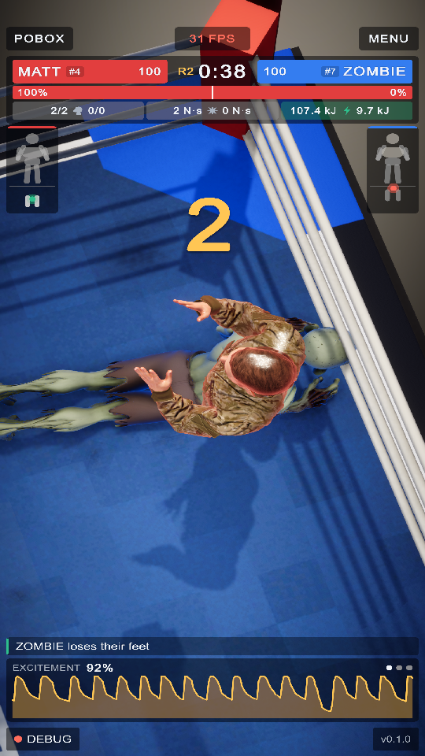
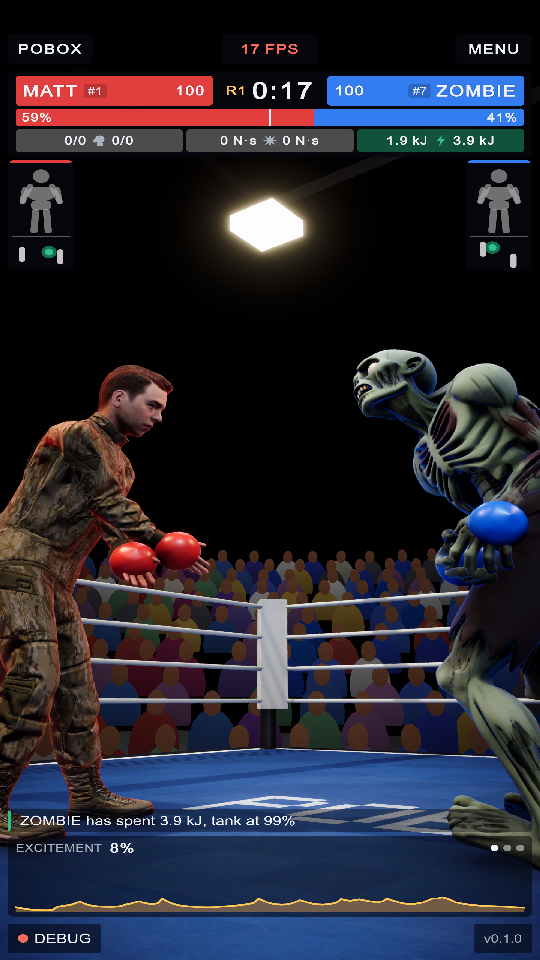

PoBox retrofit: the boxing game on MuJoCo
2 October 2026 · Phase D of tasks.md (D1 to D4) · the arena before and after its gloves, the HUD's anchors, and the layout audit
The arena is now an authored scene of prefabs on the MuJoCo plugin: the floor, the four rope walls and the eight
cubes of the trainer's own ring model, one MjRing, and every boxer twice (dressed for each corner,
switched off until the menu picks a pair). Unity's physics has no part in it: the scene holds no rigid body, no
articulation, no collider and no joint. The HUD is the one the game already had; the only thing on screen that
changed is the gloves.

AThe glove spheres were the hidden collision shapes, so a boxer punched with bare hands and a viewer could not tell whose glove was whose.

A A 1 2 3 4 5Matt v Zombie, round 1, both on their trained footwork policies.
- Changed: the gloves. Each glove is drawn as what it is to MuJoCo, the sphere a punch is measured with,
in the corner's colour (
Glove_Red,Glove_Blue). They hide with the boxer for the portraits.
Unchanged, and where each of the HUD's anchors sits:
- Title, top left: POBOX.
- Frames a second, top centre, with the scoreboard and telemetry under it (health, the win bar, punches thrown and landed, the hardest hit, energy).
- Menu, top right: the boxer menu and settings.
- Debug, bottom left: the developer panel.
- Version, bottom right.
Layout audit
The play-mode tests hold the HUD and the boxer menu to one screen with nothing scrolled or cut, at three phone shapes. All pass on the retrofitted game (19 of 19 PoBox tests, 2 October 2026).
| Test | 720 x 1280 | 1080 x 1920 | 1080 x 2400 |
|---|---|---|---|
| HUD fits one screen, no scrolling | pass | pass | pass |
| Boxer menu fits one screen, corners kept apart | pass | pass | pass |
| Other checks | Result |
|---|---|
| The arena fields the pair the menu picked, on MuJoCo, and they stay up | pass |
| Fighters stay on their feet through the intro | pass |
| Unity's physics components in the arena and the testbed | none |
| The gate, Unity against C MuJoCo 3.5.0, for Matt and for Zombie | pass (replay 6.7e-6; same cadence, torque and falls) |